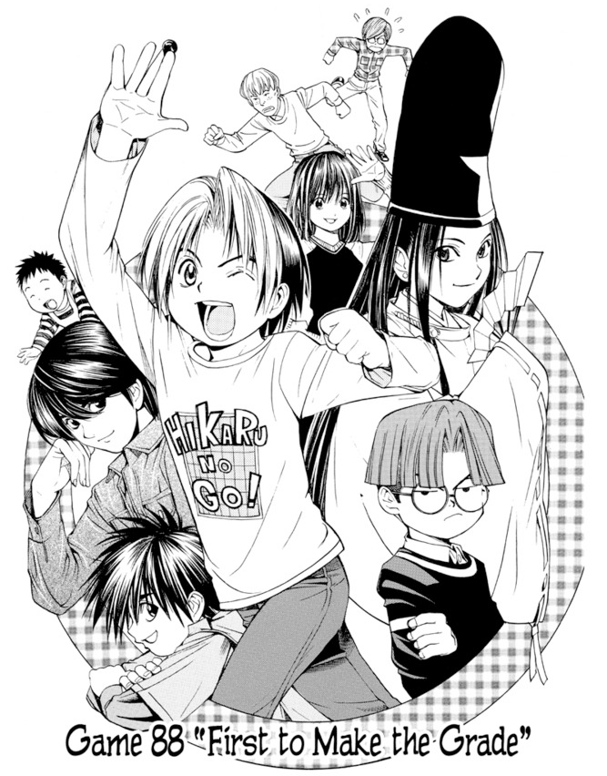

|  |
Both Manga & Animation"Hikaru no Go" is a popular anime and manga series that was first released in Japan in 2001. It is based on the game of Go, a strategic board game that originated in ancient China. The story follows thes journey of a young boy named Hikaru Shindo, who discovers an old Go board and becomes possessed by the spirit of a legendary Go player named Sai Fujiwara.As Hikaru becomes more involved in the world of Go, he meets and competes against various other players, both amateur and professional. Through his experiences, he learns about the history and culture of the game, as well as its strategic depth and beauty. |
|
About Hikaru No Go"Hikaru no Go" is a popular manga and anime series that centers around the game of Go, a strategic board game played in East Asia. Here are some of the awards and recognitions that the series has received:Shogakukan Manga Award: "Hikaru no Go" won the Shogakukan Manga Award in the shonen category in 2000. The award is given annually by Shogakukan, one of the largest manga publishers in Japan, to recognize outstanding manga. Tezuka Osamu Cultural Prize: The manga was nominated for the Tezuka Osamu Cultural Prize in 2000. The prize is named after Osamu Tezuka, a pioneer of Japanese manga and anime, and is awarded annually to recognize outstanding works in the manga and anime industries. Animage Anime Grand Prix: The anime adaptation of "Hikaru no Go" won the Animage Anime Grand Prix award for Best TV Anime in 2002. The Animage Anime Grand Prix is an annual anime award given by the Japanese anime magazine Animage. Society for the Promotion of Japanese Animation Award: The anime adaptation of "Hikaru no Go" was also awarded the Society for the Promotion of Japanese Animation Award for Best Anime Television Series in 2006. The Society for the Promotion of Japanese Animation is a non-profit organization that promotes Japanese animation in the United States. |
{kind=link}